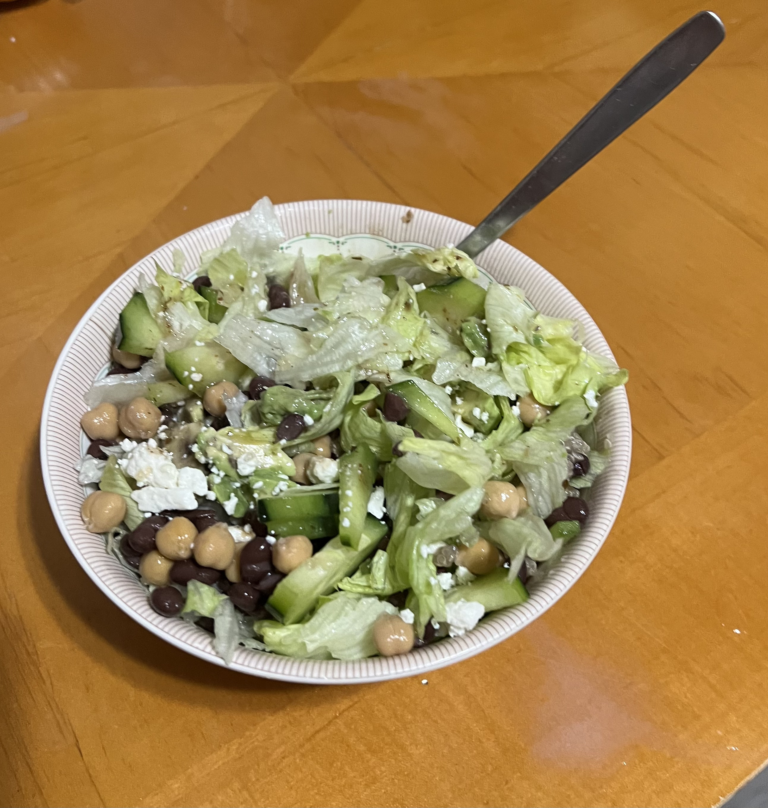
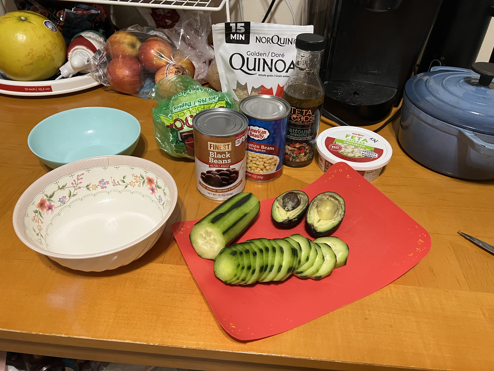
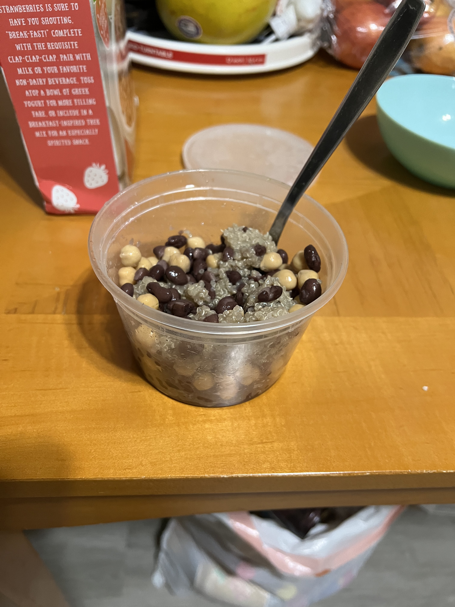
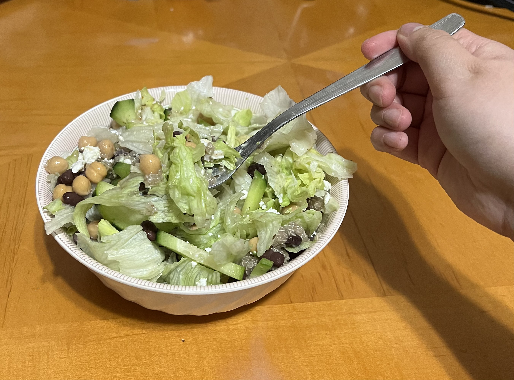
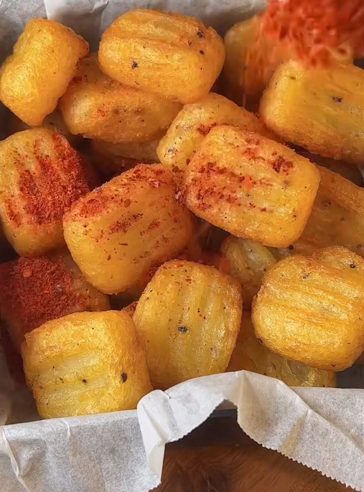
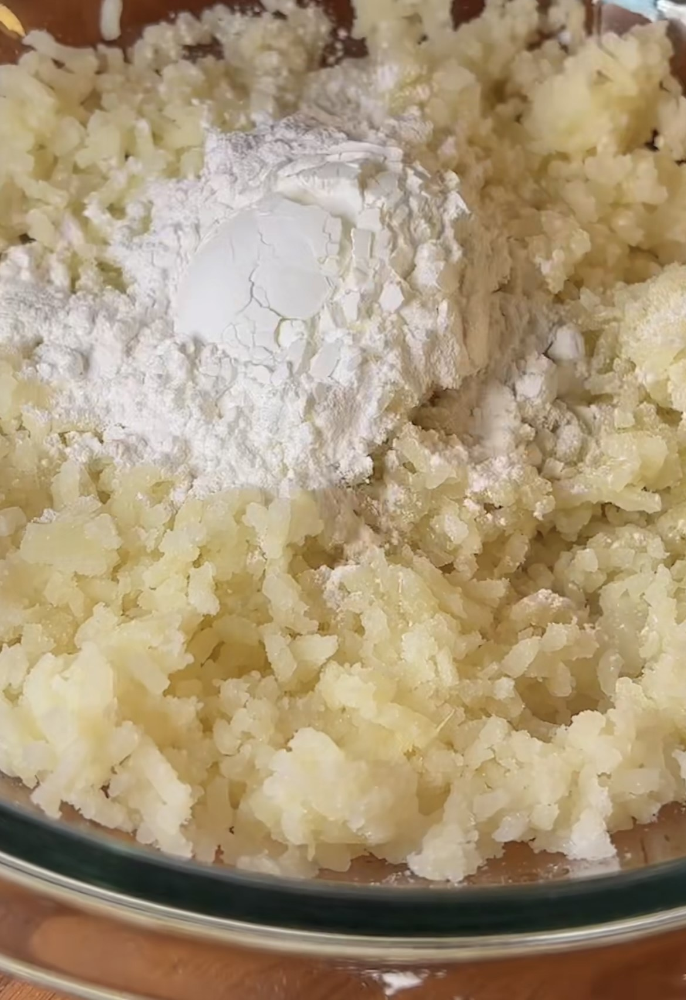
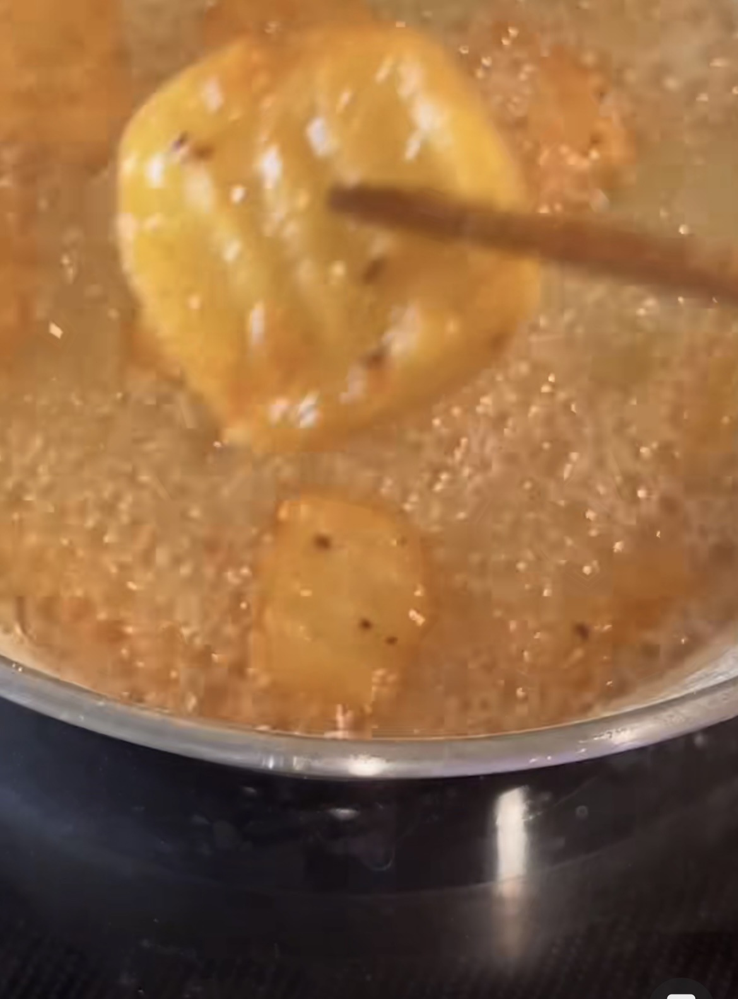
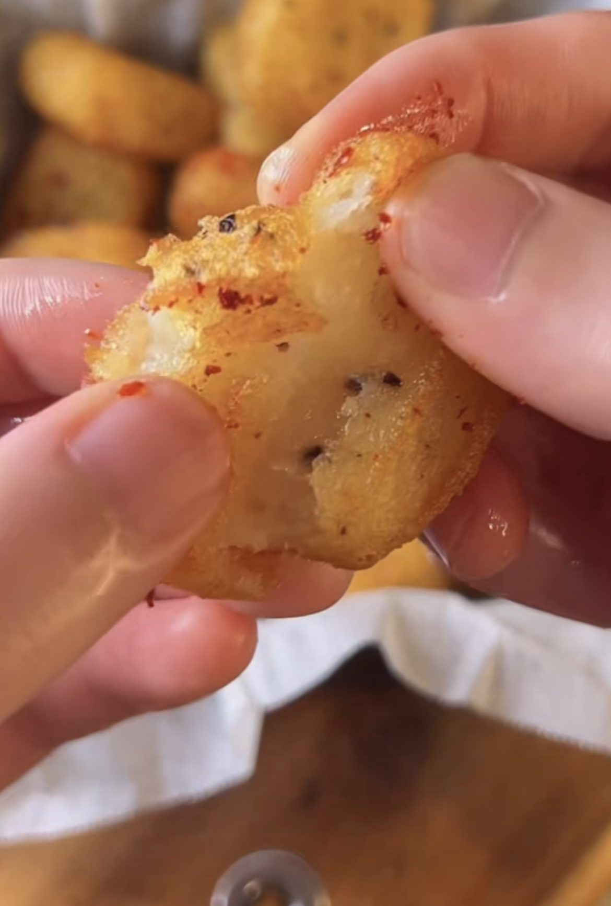
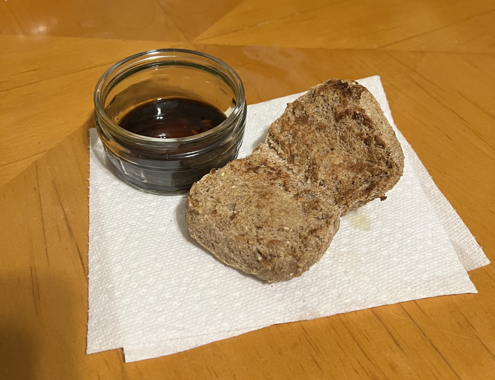

Recipes
Salad
Origin: unknown
Source: TikTok
Category: Vegetarian
It is a healthy recipe when I want something filling. I found it off of TikTok and I like it.
Recipe Ingredients
- a handful lettuce or any leafy vegetable
- a cup of chickpeas
- a cup of black beans
- 1/4 cup of quinoa
- 1/2 an avocado
- 1/2 a cucumber
- a sprinkle of feta
- as much dressing of any kind as you want
Recipe Steps
- Boil your quinoa until ready
- Throw in your leafy greens in a bowl
- Chop your cucumbers and avocado
- Pour in your chickpeas, black beans, quinoa, avocado, cucumbers, and feta
- Mix in your dressing
Additional Food Images
  Potato Nuggets
Origin: unknown
Source: TikTok
Category: Vegetarian
Sometimes I want to eat potatoes but I don't want to spend too much money. I found this recipe off of TikTok.
Recipe Ingredients
- 2 potatoes
- 2 Tbsp rice flour
- 1 Tbsp corn or potato starch
- frying oil
- 1 Thsp chili powder
Recipe Steps
- Boil your potatoes until soft
- Mash your potatoes
- Mix in the rice flour and starch
- Form nuggets or balls out of the potatoes
- Fry them until crispy
- Dust the potatoes with chili powder
Additional Food Images
  Peasant Meal (Viet. Ver.)
Origin: unknown, mixed from Asian and European cuisine
Source: Family Struggle Meal
Category: Vegetarian
Sometimes we want to go back to past and imagine ourselves as medival peasant eating a simple meal. When my family had not that much, we would just eat bread and soy sauce. It was a stuggle meal, but I love bread.
Recipe Ingredients
- bread, ideally like a baguette or a bun
- soy sauce for dipping
- optional: siracha, peppers, or any spicy sauce
Recipe Steps
- Toast your bread. If your bread is old or hard, sprinkle a little water on it or cover it with a damp paper towel and microwave for a couple seconds, then toast it.
- Mix in your spicy sauce with soy sauce in a small dish
- Eat your bread and dip it in the soy sauce mixture